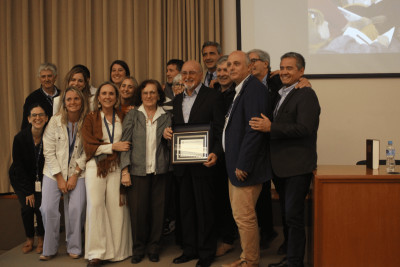

Compartimos una nueva edición de la jornada de prevención cardiovascular

El sábado 3 de mayo se llevó a cabo en nuestro centro de salud la jornada de prevención cardiovascular y medicina del estilo de vida "De la teoría a la vida".
Más de 150 asistentes participaron de este encuentro que combinó ciencia, experiencia y emoción en un espacio de aprendizaje y reflexión sobre el cuidado integral de la salud.
Agradecemos a todos los que se acercaron a seguir aprendiendo y construyendo juntos una vida más saludable para cuidar sus corazones.